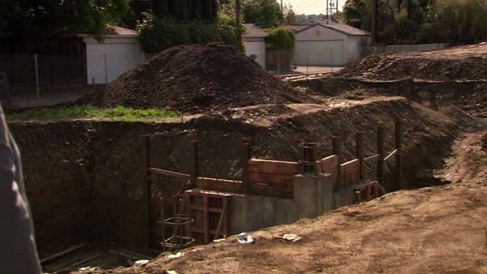

An abandoned lot on Sullivan Street has been proposed as the site of a new park. Spearheading the park initiative is Pawnee City Planner Mark Brendanawicz, assisted by Deputy Parks Director Leslie Knope.
The idea for the new park came when Andrew Dwyer, an unemployed Pawnee man, fell into an abandoned pit adjacent to his home on Sullivan Street.
Dwyer, who calls himself an aspiring musican, was taken to St. Joseph's Medical Center, where doctors treated his compound fractures.
The so-called Sullivan Street Pit was excavated last year by the property owner, who intended to build condominiums on the site. The developerwent bankrupt after digging the basement, and the lot was re-purchased by the City of Pawnee.
The abandoned pit on Sullivan Street.
As Dwyer remembers, "I was walking home after a show with my band, Scarecrow Boat, and I thought I saw a toaster lying in the pit. So then I thought maybe I should get it. Then I fell in and broke both my legs."
When asked why he would want a toaster that's lying on the bottom of a pit, Mr. Dwyer replied, "I know right? Super dumb. I was pretty drunk."
Dwyer and girlfriend Ann Perkins live adjacent to the pit, in Perkins' house. Dwyer's accident prompted Perkins to attend a Parks Department public forum, where she asked the city for help with the abandoned pit. Dwyer confirmed at the meeting that Perkins is his sole means of financial support, and that she is currently using birth control pills.
Parks Department Deputy Director Leslie Knope.
In an interview at JJ's Diner, Knope said there's a need for more park space in town. "Open space can be passive or acive, so a park would be an excellent use for the property. I just think they (parks) are not only a great place for dogs to get exercise, but for dog owners to meet other people with common interests," said Knope. She said the committee estimates it will need about $25,000 to get the park and parking lot built."
Knope then excused herself and threw up into this reporter's purse. Nonetheless, Knope insists that the city will be able to complete the park in the near future. We'll see.